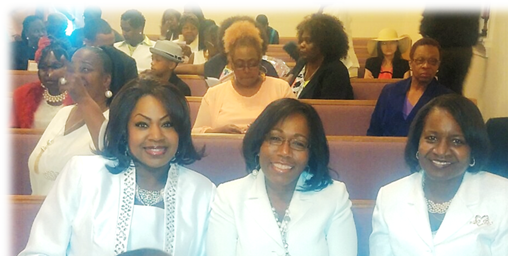

Next Generation
Children & Youth Ministry
The future is now. Our youth and children's ministry inspires personal and spiritual growth through worship services, workshops, and creative expression for every age.
"He must increase, and I must decrease."
John 3:30

Founded December 7, 1947 by the late Reverend Ealis Sallie, our church family has stood as a faithful presence in the Tracy community for nearly eighty years. We are recognized as the oldest African-American church in the city of Tracy, and we carry that heritage as both gift and responsibility.
We are a church that embraces and reflects the people we minister to. We empower our congregation educationally, economically, spiritually, and culturally, because we are doers as well as believers of the Word. Through community involvement, youth outreach, and witnessing, we provide the tools needed to walk faithfully with Christ.

"My life is worth nothing unless I use it for doing the work assigned to me by the Lord Jesus, the work of telling others the Good News about God's wonderful kindness and love." Acts 20:24 (NLT)
Pastor Morrison was born and raised in Los Angeles, California. He accepted Christ at age eight and has served the Christian community most of his life. After being ordained as a deacon in Oakland in 1993, licensed to preach in 2003, and ordained as a minister in 2005, he united with Good News in 2011 as associate pastor under Pastor B. Carl Edwards.
On March 3, 2018, after much prayer and consideration, Pastor Morrison accepted the call to serve as Senior Pastor. He shepherds Good News alongside his wife and First Lady, Doretha Morrison, with conviction, compassion, and a commitment to making the gospel plain.
From the youngest of our children to the elders of our congregation, every member has a calling and a contribution. These are some of the ways our church family serves and grows together.
The future is now. Our youth and children's ministry inspires personal and spiritual growth through worship services, workshops, and creative expression for every age.
Building moral and godly men through year-round fellowship. Our brothers gather to grow, sharpen one another, and welcome friends and family into the love of Christ.
Going out into the community to share the good news of Jesus Christ, every week. Matthew 28:19 in action. See Rev. or Sister Baker to join.
Worship services, fellowship, special programs, and community outreach. There is always a seat saved for you.
Sunday · 3:00 PM · Sanctuary
Join us as we honor Pastor and First Lady Morrison for eight years of faithful service.
Saturday · 9:00 AM · Fellowship Hall
A day of teaching, fellowship, and refreshment for the women of Good News and the wider community.
Saturday · 10:00 AM · Church Parking Lot
Free backpacks, school supplies, and a hot meal for Tracy families. Volunteers welcome.
Whether it's your first time in church in years or you're looking for a new home, you'll find a warm welcome at Good News. Come as you are. There's a seat for you.
Every gift supports the ministries, outreach, and operations of Good News. Thank you for sowing into the work the Lord is doing in Tracy.
Ways to Give